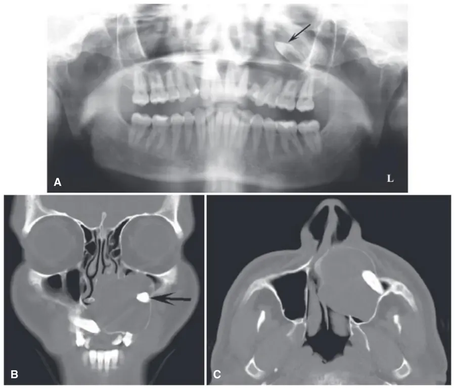
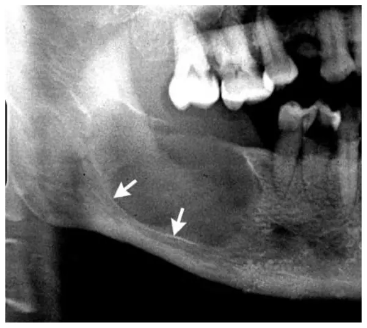

نسخه استخراجشده؛ ترجمه یا تأیید علمی انجام نشده است. وضعیت: captured
این درس کوتاهترین راه تفکیک کیست از بدخیمی را به تو میدهد: کیست جابهجا میکند، بدخیمی تخریب میکند.

کانال آلوئولار تحتانی. کیست آن را به سمت تحتانی یا لینگوالی جابهجا میکند — و مهمتر: لایهی نازکی از استخوان بین کیست و کانال باقی میماند. آن لایه، امضای رشد آهسته و خوشخیم است.
کف سینوس ماگزیلاری. به سمت فوقانی رانده میشود، باز هم با حفظ یک لایهی استخوانی نازک. سینوس کوچک میشود ولی مرزش را از دست نمیدهد.
و بارزترین اثر روی دندان — تحلیل خارجی جهتدار: ریشه در امتداد کیست تحلیل میرود و کانتور تحلیل، انحنای کیست را آینه میکند. این آینگی، امضای فشار مکانیکی یکنواخت است، نه تهاجم.
و دو ساختار ریز که خبر میدهند: کیست میتواند لامینا دورا را محو کند و فضای PDL را از میان ببرد. برعکس، اگر لامینا دورای دندانهای داخل ضایعه سالم مانده باشد، به فرایندی فکر کن که استخوان را دور میزند و به دندان کار ندارد — همان چیزی که در درس آخر با نام حفرهی سادهی استخوانی میآید.
و اثر بر خود استخوان: مرز کورتیکال ابتدا نازک میشود، سپس با ریمادلینگ بیرون میزند. اتساع صاف و منحنی است، نه دندانهدار.
شایعترین کیست فک از بقایای مالاسه در فضای PDL میآید — همانجا که در یونیت ۶ التهاب پریاپیکال را دنبال کردیم.

و حالا اعتراف مهم — این را دستکم نگیر: کیست رادیکولار از آبسه و گرانولوما روی تصویر قابل تفکیک نیست. به همین دلیل برای هر سه، اصطلاح چتری استئیت رارفاکتیو به کار میرود. تنها بیوپسی تشخیص را قطعی میکند.
پس چرا اصلاً دنبال تفکیکشان بگردیم؟ نمیگردیم. کار درست این است که گزارش را با همان واژهی چتری بنویسی و تصمیم درمانی را روی وضعیت حیات پالپ و اندازه و روند ضایعه بگذاری، نه روی حدس بافتشناسی از روی تصویر.
و کیست باقیمانده (residual)؟ وقتی پوشش اپیتلیالی یک کیست قبلی — معمولاً رادیکولار یا دنتیجروس — ناقص برداشته شود، همانجا دوباره کیست میسازد. اپیسنتر آن در ناحیهای است که پیشتر دندان داشته، و در مندیبل همیشه بالای کانال آلوئولار تحتانی است.
و افتراقش از نقص استافنه: اپیسنتر استافنه پایینتر از کانال است و کورتکس آن بسیار ضخیم. کیست باقیمانده هم پتانسیل اتساع بیشتری از کراتوسیست دارد.
نوع سؤال: ساخت کلمه · 4 خانه
حروف منبع: ا · ز · ک · ن